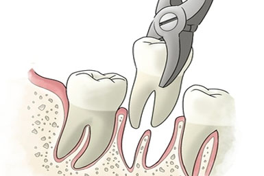

While many teens and some adults get their wisdom teeth removed, there are other reasons why tooth extraction may be necessary in adulthood.
Excessive tooth decay, tooth infection, and crowding can all require a tooth extraction. Those who get braces may need one or two teeth removed to provide room for their other teeth as they shift into place. Additionally, those who are undergoing chemotherapy or are about to have an organ transplant may need compromised teeth removed in order to keep their mouth healthy.
Tooth extraction is performed by a dentist or oral surgeon and is a relatively quick outpatient procedure with either local, general, intravenous anesthesia, or a combination. Removing visible teeth is a simple extraction. Teeth that are broken, below the surface, or impacted require a more involved procedure.